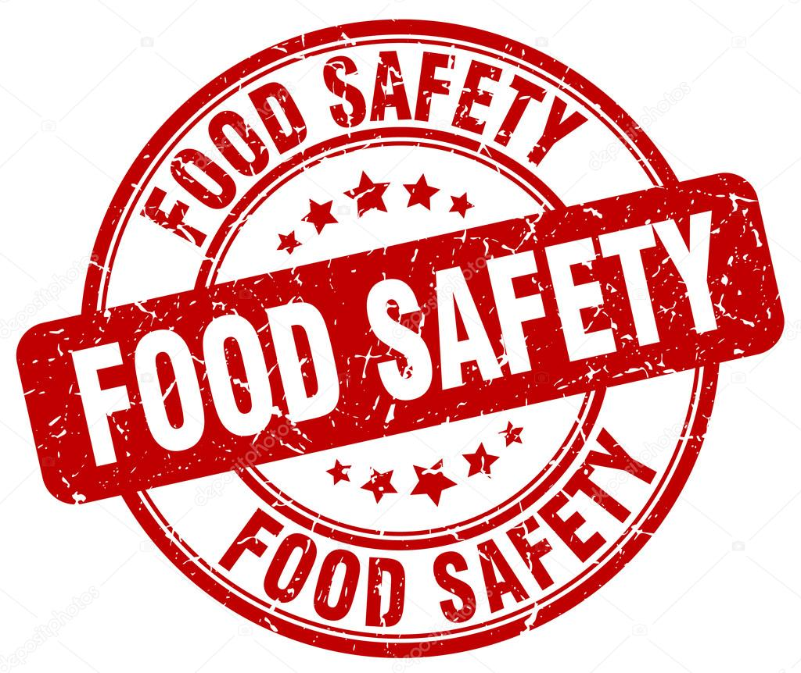

Food Safety
This website provides inspection reports for permitted establishments regulated by the Prince George County Department of Agriculture and Consumer Services' Division of Food Safety.
Regulated establishments include: routine inspections for food service facilities such as restaurants, grocery stores, catering facilities, theater and stadium concessions, public and private schools, penal institutions, shelters and senior feeding programs; inspections for temporary or seasonal food operations including vending locations, carnivals, fairs, festivals and farmers markets; and inspections for mobile food units.